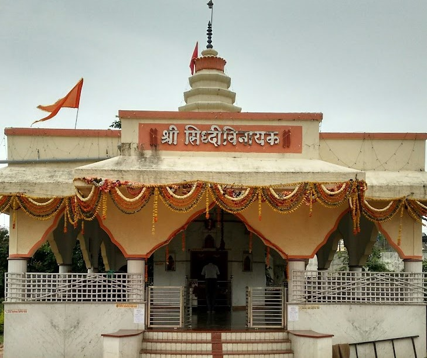

|| जय श्री राम ||
Visiting a Mandir daily helps cleanse the mind and soul, allowing individuals to start each day with a fresh perspective and positive energy.
Sacred Mandirs in Yavatmal
Datta Mandir
📍 Datta chowk, Yavatmal
Kamleshwar Shiv Mandir
📍 Lohara, Yavatmal
Jagat Mandir
📍 Yavatmal
Shree Swami
Samarth Mandir
📍 Yavatmal
Gajanan Maharaj Mandir
📍Ganesh Nagar, Yavatmal

Siddhivinayak Mandir
📍 Yavatmal

Ganpati Mandir
📍Naringe Nagar, Yavatmal
Mahadev Mandir Chausala
📍Chausala, Yavatmal
Shani mandir
📍 Yavatmal